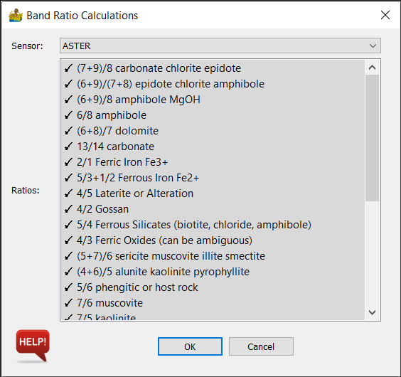
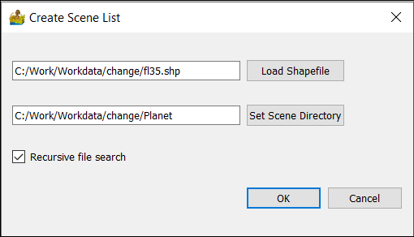

Remote Sensing: Description of Modules¶
This section is out of date and will be updated in the future
Import Data¶
This is a menu with submenus enabling the importing of remote sensing data
Import ASTER¶
ASTER data can be imported here. Note that it is the data as obtained from https://earthdata.nasa.gov. It can either be in .hdf format or imported as a zip file containing GeoTIFF images.
Import Landsat 4 to Landsat 8¶
Landsat data can be imported here. Note that it is the data as obtained from https://earthexplorer.usgs.gov. It can either be in L*.tar.gz format or extracted, with a _MTL.txt and GeoTIFF files.
Import Sentinel 2¶
Sentinel 2 data can be imported here. Note that it is the data as obtained from https://earthexplorer.usgs.gov. It is the extracted directory, with an appropriate xml file (e.g. MTD_MSIL2A.xml).
Import Sentinel 5-P¶
Sentinel 5-P data is imported here, but unlike other imports, this converts data to a vector data format, from where it can be exported to a shapefile using the context menu. It accepts .nc data. This import also allows the user to cut the data according to a bounding box. The options are:
Product - Relevant product contained in the .nc file
Minimum Longitude
Maximum Longitude
Minimum Latitude
Maximum Latitude

Import MODIS v6¶
MODIS data can be imported here.
Create Batch List¶
This option allows the user to flag a directory of remote sensing data for use in other remote sensing modules that support batch processing. Note that it does not actually import any data. It merely creates a list within PyGMI. The user must select a directory as input.
Calculate Band Ratios¶
This module allows the user to calculate ratios from a list of standard ratios found in the literature (Kalinowski and Oliver, 2004, Van der Meer et al 2014). It takes as input either a standard import of remote sensing data, or input from a batch list. The user must select the relevant satellite and confirm which ratios are needed. Ratios are automatically exported to GeoTIFF format with the suffix _ratio.tif
Hyperspectral Imaging¶
Analyse Spectra¶
This module allows for a user to select a spectrum from a dataset, and compare it with library spectra. Different features can be highlighted, and a hull can be removed from the spectrum. This tool is essentially a viewer, allowing for the user to strategize interpretation strategies.
Options are:
Display band – choice of which data wavelength to display.
Feature – highlight a standard spectral feature.
Rotate view – Allows a dataset to be rotated for display purposes.
Remove hull – allows for the hull removed representation of a spectrum.
Load ENVI spectral library. This can be any spectral library in ENVI spectral library format. The user then chooses the appropriate reference spectrum to compare with.
Process Features¶
This module takes as input hyperspectral data, and allows for a standard set of feature definitions to be calculated (Haest et al. 2012). Currently this includes mica, spectate, kaolin, chlorine, epidote and ferrous iron. Once a product is selected, the details of the various datasets which make up the calculation are shown on a table, including feature name, filter, threshold and description. The user is able to alter details such as the respective dataset threshold.
Options are:
Product - includes mica, spectate, kaolin, chlorine, epidote and ferrous iron.
Details - including feature name, filter, threshold and description. The user is able to alter the respective dataset threshold.
Change Detection¶
The change detection menu allows a user to create a list of scenes for comparison, and then view the scenes sequentially in a viewer.
Create Scene List¶
This allows the user to create a list of scenes for comparison. Currently GeoTIFF is supported. The inputs are as follows:
Load Shapefile - This is a boundary to define an area of interest within the scenes. Only scenes which contain boundary will be selected.
Set Scene Directory - The directory which contains all the scenes for comparison.
Recursive file search - searches sub directories for additional scenes.
The module automatically requests an excel filename for outputting the scene list. This also enables the user to make manual changes to the list.
Load Scene List¶
Loads an excel file creates in Create Scene List.
View Change Data¶
This is the viewer for the change data. It allows scenes to be displayed with a variety of options:
Horizontal scroll bar - this bar is used to quickly change between scenes
Only display scenes flagged for use
Use scene - checkbox to select whether a scene should be used.
Band manipulation - the data can be displayed as either RGB, NDVI or NDWI (Green/NIR version, McFeeters 1996)
Next scene
Update scene list file - used to update or save to a new scene list file. Scenes flagged for use are captured in this file.